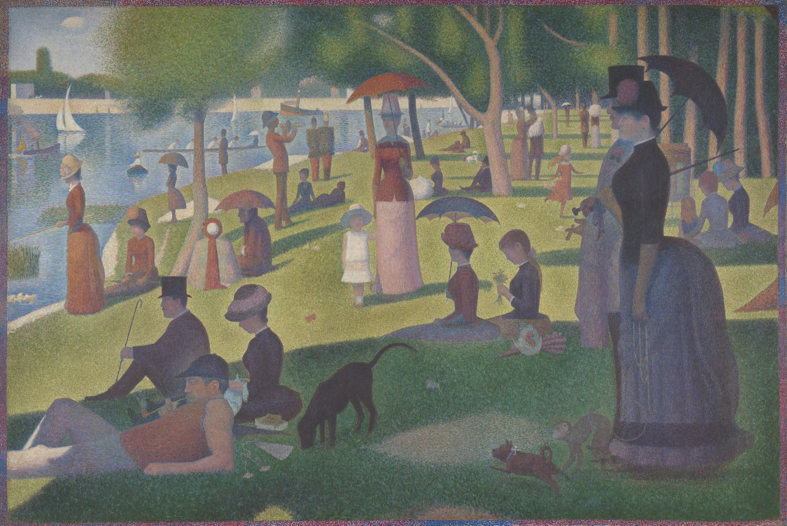

大碗岛的星期天下午 A Sunday on La Grande Jatte — 1884
修拉 · 1884–86年 · 芝加哥艺术博物馆
Georges Seurat · 1884–86 · Art Institute of Chicago
图片：芝加哥艺术博物馆开放资源（CC0），公有领域 / Image: Art Institute of Chicago, CC0 public domain

发现 · Discover
塞纳河上的小岛 An island in the Seine
大碗岛是巴黎西边塞纳河上的一个小岛。星期天下午，不同阶层的人都来这里散步、休息。
La Grande Jatte is an island in the Seine, just west of Paris. On Sunday afternoons, people from different social classes came here to stroll and relax.
像雕塑一样 Like ancient sculpture
画的是现代生活，修拉却想让它像古代埃及和希腊的雕塑一样，有一种永恒感。
Though the subject is modern life, Seurat wanted it to feel timeless, like ancient Egyptian and Greek sculpture.
小点 Dots of colour
画面是由无数靠得很近的纯色小点组成的。从远处看，这些点会在眼睛里混合起来。
The picture is made of countless closely placed points of pure colour, which mix together in the viewer's eye from a distance.
先横线，后小点 First strokes, then dots
1884年，他先用一层互补色的横向小笔触打底，再加上一层小点。
In 1884, he began with a layer of small horizontal strokes in complementary colours, then added a layer of dots.
画出来的边框 A painted border
画面四周有一圈蓝、橙、红色的小点，是修拉后来加上去的，连接画面和白色的画框。
Around the edge is a border of blue, orange and red dots, added later, linking the picture to its white frame.
大约40个人 About forty people
画面上大约有40个人物，大多是侧面或正面，好像一幅希腊古典浮雕。
Some 40 figures fill the canvas, mostly in profile or facing us, like a classical Greek frieze.
两年后又回来 Back two years later
开始画两年后，修拉又回来修改，加强了一些人物的轮廓，还加了新的人物。
Two years after starting, Seurat returned to the painting, strengthening some silhouettes and adding new figures.
故事 · The story
ACT I 第一幕 · 河对岸的岛 The island across the river
1884年，修拉画完了《阿涅尔的浴场》。画面右边那座小岛，就是大碗岛。同一年，他开始画这幅更大的画。
In 1884, Seurat finished Bathers at Asnières. The island on its right is La Grande Jatte. That same year, he began this even larger painting.
1884–86年 · 芝加哥艺术博物馆 / 1884–86 · Art Institute of Chicago
ACT II 第二幕 · 一个点一个点 Dot by dot
他用了两年时间，先画横向的笔触，再一个点一个点地画。他说，他想用希腊古典浮雕的方式，表现现代生活。
He worked on it for two years, first with horizontal strokes, then dot by dot. He said he wanted to represent modern life in the manner of a classical Greek frieze.
1884–86年 · 芝加哥艺术博物馆 / 1884–86 · Art Institute of Chicago
ACT III 第三幕 · 最后一届印象派画展 The last Impressionist exhibition
1886年5月，这幅画在第八届、也是最后一届印象派画展上首次展出。1926年起，它成为芝加哥艺术博物馆的永久收藏。
In May 1886, the painting was first shown at the eighth and last Impressionist exhibition. Since 1926 it has been in the permanent collection of the Art Institute of Chicago.
1884–86年 · 芝加哥艺术博物馆 / 1884–86 · Art Institute of Chicago
一个点，一个点，一个星期天的下午。 Dot by dot, a Sunday afternoon.
作品档案 · Artwork record
| 画家（生卒年） · Artist (dates) | 乔治·修拉（1859–1891） / Georges Seurat (1859–1891) |
|---|---|
| 画名 · Title | 大碗岛的星期天下午 / A Sunday on La Grande Jatte — 1884 |
| 年份 · Date | 1884–86年，边框加于1888–89年 / 1884–86, border added 1888–89 |
| 材质 · Medium | 布面油画 / Oil on canvas |
| 尺寸 · Dimensions | 207.5 × 308.1 cm |
| 收藏地 · Collection | 芝加哥艺术博物馆（1926年起；编号 1926.224） / Art Institute of Chicago (since 1926; 1926.224) |
关于画家 · About the artist
乔治·修拉（1859–1891），法国画家，生于巴黎，在巴黎美术学院接受过传统训练。他发明了用对比色小点作画的技法，后来被称为点彩派。他31岁就去世了。
Georges Seurat (1859–1891) was a French painter, born in Paris and trained at the École des Beaux-Arts. He developed a technique of painting in dots of contrasting colour, later known as pointillism. He died aged 31.
更多修拉的画 · More by Georges Seurat